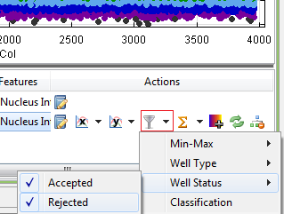
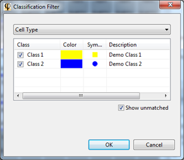

Filtering is an option that is available in the chart layers. However, not every layer can have a filter and not all charts have the same filter possibilities.
The available filters options are:
To apply a filter on a certain layer, you can press the downwards pointing triangle next to the filter button and select the filter you wish to apply. e.g. if you wish to filter out all the rejected wells, you should remove the checked box by clicking on Well Status > Rejected.

Most filters are straightforward to use: to enable a filter, simply select one and enter a valid value (e.g. a Min X value to enable filtering on the X axis).
When you click on the classification filter in the Filter menu, the classification filter dialog will open:

In the list at the top, you can select the feature whose classification you want to use. In the table below the feature list, you can select the classes you want to see.
Select Show unmatched to include data points that do not match any of the listed classes.